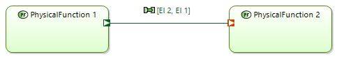
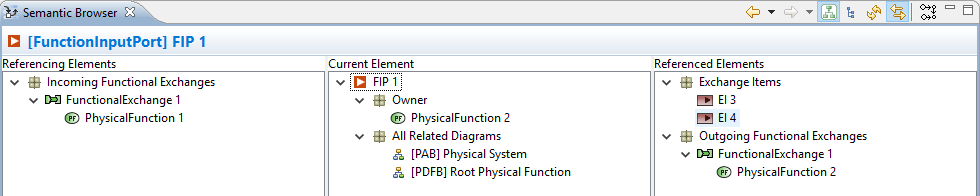
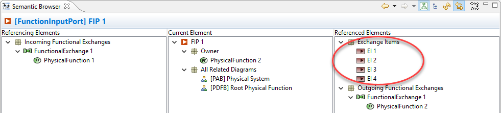
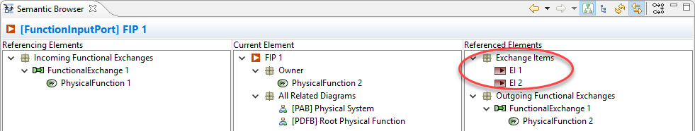
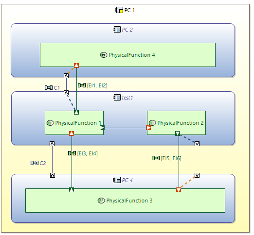
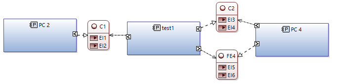

Between engineering phases or within one, some modeling tasks can be tedious. Capella provides a few tools allowing automated synchronization or generations of model elements. These tools are all available contextually under the Modeling Accelerators menu.
Source element: Components (System, Logical Components, Physical Components)
Command: Modeling Accelerators / Component Exchanges
Effect: Creates Component Exchanges between Components according to the Function they implement and the Functional Exchanges between them. Also creates the Component Ports and Port Allocations.
Model before generation
Model after generation of Component Exchanges on LC 1

The Semantic Browser shows the Functional Exchanges are correctly allocated to their corresponding Component Exchanges.

Note: For example in the case of LF1 and LF2, the tool cannot decide whether one single Component Exchange should carry both Functional Exchanges or one Component Exchange is necessary for each. The latter solution is the one applied; it is up to the system engineer to refactor this result if needed.
Source element: Node Physical Components
Command: Modeling Accelerators / Physical Links
Effect: Creates Physical Links between Node Physical Components according to the existing Component Exchanges between the Behaviour Physical Components they deploy. This generation also creates Physical Ports and Delegations.
Model before generation

Model after generation of Physical Links on PC3

The Semantic Browser shows the Component Exchanges are correctly allocated to their corresponding Physical Links.

Source element: Functions or Functional Exchanges
Command: Modeling Accelerators / Propagate Exchange Items to Function Ports
Effect: Adds references from input and output Function Ports to the Exchange Items associated to the current Functional Exchange. When launched on a Function, this command applies recursively for all Functional Exchanges of the Function hierarchy.
Model before propagation: EI 1 and EI 2 are referenced by the Functional Exchange whereas the Function Input Port on Physical Function 2 references EI 3 and EI 4:
 
 Model after propagation: Exchange Item references to EI 1 and EI 2 have been added to the Function Input Port:
Model after propagation: Exchange Item references to EI 1 and EI 2 have been added to the Function Input Port:

The same change is applied to the Function Output Port.

Source element: Functional Exchange
Command: Modeling Accelerators / Synchronize Exchange Items and Function Ports
Effect: Adds references from input and output Function Ports to the Exchange Items associated to the selected Functional Exchange, and removes any other Exchange Item reference from these Function Ports.
Model before synchronization: EI 1 and EI 2 are referenced by the Functional Exchange whereas the Function Input Port on Physical Function 2 references EI 3 and EI 4:
Model after synchronization: The Exchange Item references to EI 3 and EI 4 have been removed from the Function Input Port, and references to EI 1 and EI 2 have been added:

The same change is applied to the Function Output Port.
Source element: Functions or Functional Exchanges
Command: Modeling Accelerators / Propagate Port Realizations from realized Functional Exchange
Effect: Adds a Realization link between Function Ports of two successive engineering phases, according to the existing Functional Exchange realizations. When launched on a Function, this command applies recursively for all Functional Exchanges of the Function hierarchy.
Model before generation

At Physical level, the Functional Exchange is moved towards a new Function. The Port of the Physical Function PF 7 does not realize the one of the Logical Function LF 6.

After generation of Function Port realizations, the traceability between Function Ports is set.

Source element: Components or Component Exchanges
Command: Modeling Accelerators / Propagate Port Realizations from realized Component Exchange
Effect: Adds a Realization link between Component Ports of two successive engineering phases, according to the existing Component Exchange realizations. When launched on a Component, this command applies recursively for all Component Exchanges of the Component hierarchy.
Model before generation
At Physical level, the Component Exchange is moved towards a new Component. The Port of the Physical Component New PC does not realize the one of the Logical Component LC 4.

After generation of Component Port realizations, the traceability between Component Ports is set.

Source element: System, Logical System, Logical Components, Physical Components, Configuration Items
Command for System element: Modeling Accelerators / Propagate Interfaces to Logical System
Command for Logical System: Modeling Accelerators / Synchronize Interfaces from System Analysis
Command for Logical Components: Modeling Accelerators / Propagate Interfaces to allocating Physical Component
Commands for Physical Components:
Command for Configuration Items: Modeling Accelerators / Synchronize Interfaces from allocated Physical Components
Effect: Given a source component use / implement / provide / require links towards Interfaces, replicate these links on the target component.
Model before generation: At System level, the System element uses / implements / provides / requires a set of Interfaces. As shown by the Semantic Browser, the Logical System (which is realizing the System element) does not use / implement / provide / require any Interface.


After the Interface Synchronization is launched from the Logical System, the Logical System uses / implements / provides / requires the same Interface than the System element.

This synchronization also manages the Interfaces that are not used / implemented / provided / required anymore by the source element. For example if Interface 1 is not implemented anymore by the System element, applying the same synchronization command a second time modifies the Logical System.
Between these two engineering phases, it is possible to perform a transition of Interfaces. In that case, a source Logical Interface leads to the creation of a corresponding Physical Interface in the Physical Architecture.
If the Interface synchronization algorithm finds such a realization link between Logical and Physical Interfaces, then the corresponding Use / Implement / Provide / Require links from the Physical Component target the Physical Interface instead of the original Logical Interface.
Source element: Components (System, Logical Components, Physical Components)
Command: Modeling Accelerators / Interfaces from allocated Functions
Effect: Analyze the Component Exchanges, the Functional Exchanges they carry and the Exchange Items associated to the Functional Exchanges to generate a set of Interfaces between Components
Source model: Two components, three Component Exchanges, four Functional Exchanges associated to Exchange Items.

Same elements with Functional Exchange displaying the referenced Exchange Items and Component Exchanges displaying allocated Functional Exchanges.

Result of the generation of Interfaces: One Interface is created per Component Exchange. All Exchange Items coming from different Functional Exchanges are aggregated in the same Interface.

This example demonstrates interface generation in the following cases:

Three interfaces will be generated:
